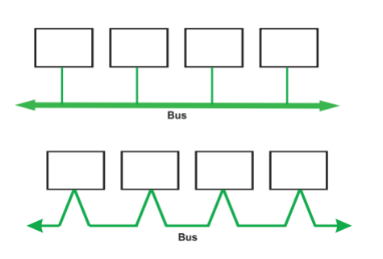
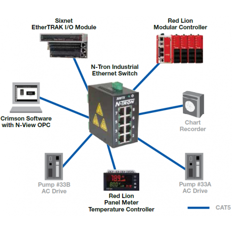
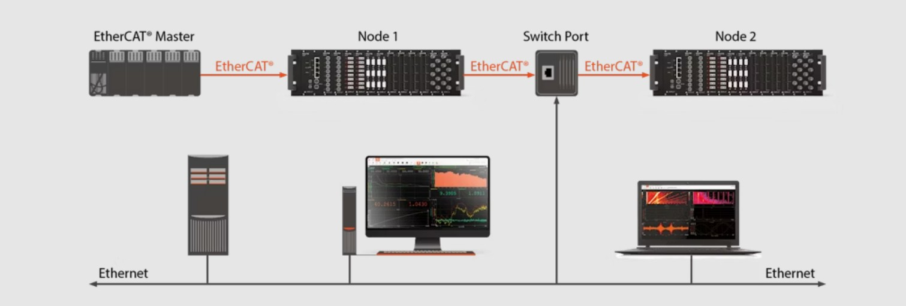
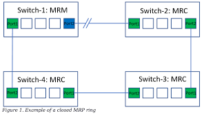
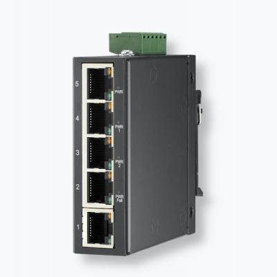
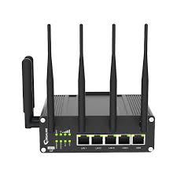
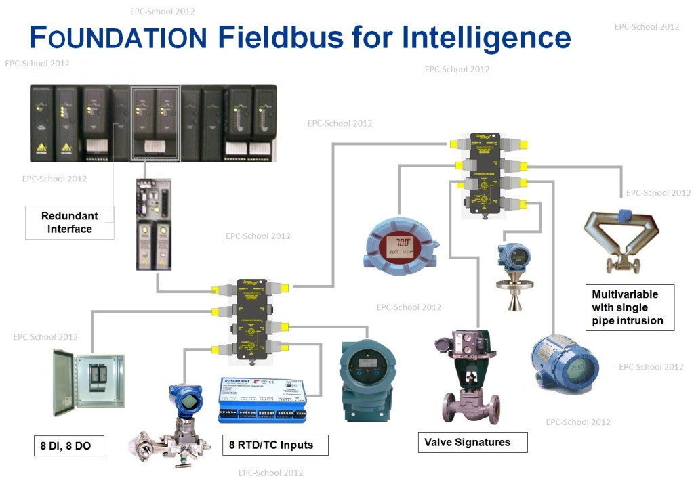
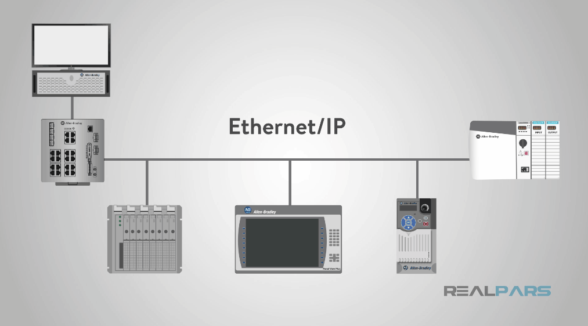
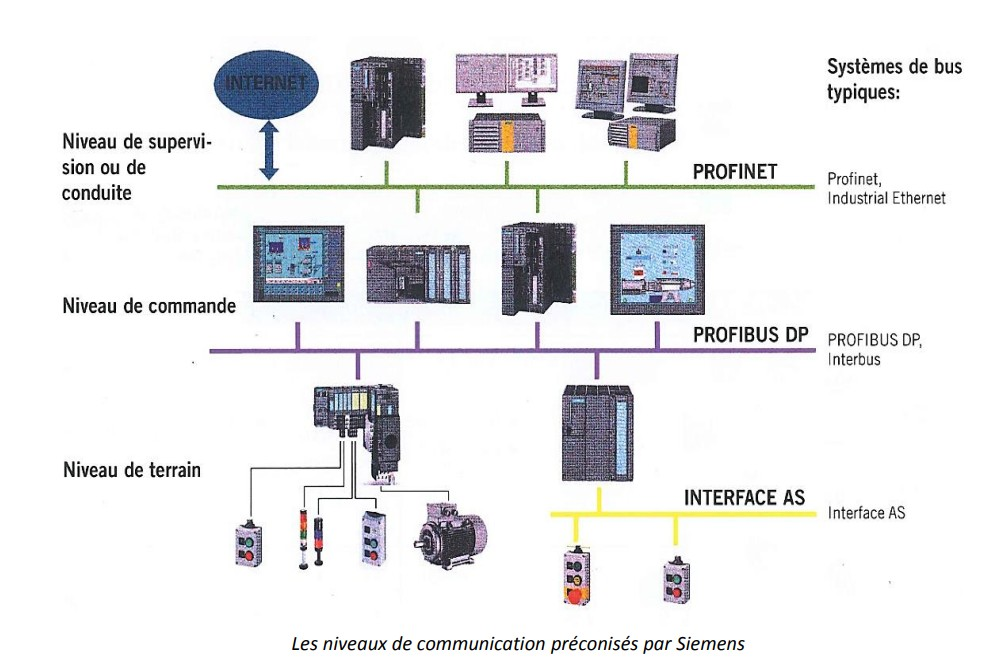

Communication industriels
Topologies de réseau industriel
La topologie de réseau définit la manière dont les équipements industriels (automates, capteurs, actionneurs, E/S déportées, superviseurs) sont interconnectés. Le choix de la topologie influe directement sur la disponibilité, la robustesse, la latence et la facilité de maintenance du système.
Topologie en bus : tous les équipements partagent un même support de communication. Elle est typique des Fieldbus (Modbus RTU, Profibus, CAN). Simple et économique, mais sensible aux coupures du câble principal.
Topologie en bus (Profibus)
Topologie en étoile : chaque équipement est relié à un point central (switch). Très utilisée en Ethernet industriel pour sa flexibilité et sa facilité de diagnostic.
Topologie en étoile
Topologie en ligne (daisy chain) : les équipements sont connectés les uns à la suite des autres. Courante avec EtherCAT et Profinet, elle réduit le câblage et permet des temps de cycle courts.
Topologie en ligne (Ethercat)
Topologie en anneau : utilisée lorsque la redondance est requise. Une coupure de câble n’interrompt pas la communication grâce à un chemin alternatif (MRP, RSTP).
Topologie en anneau
Produits d’interconnexion industriels
Les produits d’interconnexion assurent la liaison physique et logique entre les équipements du réseau industriel, tout en résistant aux contraintes environnementales.
Switchs industriels : utilisés dans les réseaux Ethernet industriels. Les modèles administrables permettent la gestion de la redondance, des VLAN et du diagnostic réseau.
Routeurs industriels : assurent l’interconnexion entre réseaux industriels et IT et permettent l’accès distant sécurisé.
Passerelles (gateways) : permettent la conversion entre différents protocoles de communication dans les architectures hétérogènes.

Protocole de Communcation
En automatique industrielle, les protocoles de communication sont généralement classés en trois grandes familles : Fieldbus, Ethernet industriel et Supervision. Chaque famille répond à des besoins spécifiques en termes de temps réel, de robustesse, de volume de données et d’interopérabilité.
Fieldbus (bus de terrain)
Les protocoles Fieldbus sont utilisés au plus près du procédé, pour relier capteurs, actionneurs et modules d’entrées/sorties. Ils privilégient la robustesse, la simplicité et le déterminisme temporel. En effet chaque message arrive et part à un timing fixe connu. Les communications de type maitre/esclave génère peu de traffic inutile permettant de controler totalement la bande passante (~500kbit/s).
Des protocoles comme Modbus RTU, Profibus ou CANopen sont largement utilisés car ils sont fiables et adaptés aux environnements industriels sévères.
Leur principal inconvénient réside dans leurs débits limités et leur faible évolutivité, ce qui les rend moins adaptés aux architectures complexes ou aux grandes quantités de données.
Modbus RTU est l’un des Fieldbus les plus simples et les plus répandus. Il fonctionne sur une liaison série RS-485 et repose sur une architecture maître/esclave par interrogation cyclique. Le hardware requis est minimal (interface série standard), ce qui en fait une solution économique. La programmation se fait via des blocs de communication dans l’automate (langages IEC 61131-3), la gestion du protocole étant assurée par une stack bas niveau intégrée au système.
Profibus DP est un bus de terrain déterministe destiné aux échanges rapides avec des E/S déportées. Il nécessite un hardware spécifique (cartes Profibus, transceivers et câbles dédiés) afin de garantir les performances temps réel. La configuration du réseau s’effectue à l’aide de fichiers GSD, et la communication est ensuite exploitée par l’utilisateur via des blocs fonctionnels dans l’environnement automate.
CANopen, basé sur le bus CAN, est particulièrement reconnu pour sa robustesse face aux perturbations électromagnétiques. Il est très utilisé dans les machines et les systèmes embarqués. Son fonctionnement repose sur un contrôleur CAN matériel et une stack logicielle généralement écrite en C. La communication est structurée autour d’un dictionnaire d’objets standardisé, facilitant la configuration et l’interopérabilité.
| Protocole | Avantages | Inconvénients |
|---|---|---|
| Modbus RTU |
|
|
| Profibus DP |
|
|
| CANopen |
|
|
Ethernet industriel
Les protocoles Ethernet industriels comme PROFINET, EtherCAT ou EtherNet/IP sont utilisés au niveau des machines et des lignes de production pour assurer la communication entre les différentes parties des PLC : les variateurs, les E/S déportées et les systèmes de supervision.
Contrairement à l’Ethernet standard, ces protocoles intègrent des mécanismes de communication en temps réel, plus ou moins stricts selon le protocole. Cela garantit que les données critiques de commande et de contrôle sont transmises dans des délais maîtrisés, indispensables au bon fonctionnement des systèmes automatisés.
Les differents protocoles ethernet industriel sont utile quand il est nécéssaire de transmettre des grandes quantitées de données (debit ~100Mbit/s) et est donc très interessant dans un context de vision, motion controle, variateur et autre aspect de robotique.
Profinet est l’un des plus répandus. Il fonctionne sur Ethernet standard et propose plusieurs niveaux de performance (RT et IRT). Le hardware peut être standard, mais les applications temps réel exigent souvent des cartes réseau ou switchs compatibles. La programmation se fait dans l’environnement automate (IEC 61131-3), la stack Profinet étant intégrée au système.
EtherCAT est particulièrement adapté aux applications de motion control. Il nécessite un hardware spécifique côté esclave (ASIC ou FPGA) pour traiter les trames “on-the-fly”. La stack est majoritairement implémentée en C, et la configuration s’effectue via des fichiers ESI. Il offre des performances très élevées mais une interopérabilité IT plus limitée.
EtherNet/IP, basé sur le protocole CIP, est très utilisé dans l’écosystème Rockwell. Il repose sur Ethernet standard, mais son temps réel est moins strict que celui d’EtherCAT. La stack est implémentée en C/C++ et exposée à l’utilisateur via des objets et services configurables dans l’automate.
| Protocole | Avantages | Inconvénients |
|---|---|---|
| Profinet |
|
|
| EtherCAT |
|
|
| EtherNet/IP |
|
|
Supervision
Les protocoles de supervision assurent la communication entre systèmes SCADA et MES, interfaces homme-machine ou entre plusieurs machines. Des solutions comme Modbus TCP, OPC UA ou MQTT sont privilégiées pour leur interopérabilité et leur capacité à échanger des données de plus haut niveau.
Ces protocoles ne sont généralement pas conçus pour le temps réel dur, mais ils offrent en contrepartie une meilleure ouverture, des mécanismes de sécurité et une intégration facilitée avec les systèmes informatiques modernes.
Modbus TCP est très utilisé pour sa simplicité. Il fonctionne sur Ethernet standard sans hardware spécifique. La programmation est simple, via des bibliothèques disponibles dans la plupart des langages (C, C++, Python, Java) et des blocs de communication côté automate. En revanche, il ne propose ni sécurité native ni modélisation avancée.
OPC UA est aujourd’hui le standard de référence pour la supervision moderne. Il repose sur une stack logicielle complète intégrant sécurité, modélisation orientée objet et indépendance vis-à-vis du système d’exploitation. Il est implémenté dans de nombreux langages (C/C++, C#, Java, Python) et ne nécessite pas de hardware spécifique.
MQTT est principalement utilisé pour la remontée de données vers des systèmes IIoT ou le cloud. Il fonctionne selon un modèle publish/subscribe avec un broker. Très léger et multi-langage, il n’est pas adapté aux échanges temps réel mais excelle pour la collecte et la diffusion de données à grande échelle.
| Protocole | Avantages | Inconvénients |
|---|---|---|
| Modbus TCP |
|
|
| OPC UA |
|
|
| MQTT |
|
|
Hiérarchie d’automatisation (ou pyramide CIM / ISA-95)
La hiérarchie d’automatisation décrit l’organisation fonctionnelle des systèmes industriels, depuis le procédé physique jusqu’aux systèmes informatiques de gestion. Elle permet de structurer les échanges de données et de définir où s’inscrivent les différents protocoles de communication.
Cette organisation est souvent représentée par la pyramide d’automatisation, également appelée modèle CIM ou norme ISA-95.
Niveau 0 – Terrain : Il correspond au procédé physique. On y trouve les capteurs (température, pression, position) et les actionneurs (moteurs, vérins, vannes). La communication est majoritairement analogique (4–20 mA, 0–10 V) ou TOR, parfois intégrée à des bus de terrain simples.
Niveau 1 – Commande : Ce niveau regroupe les automates programmables industriels (API/PLC) et les régulateurs. Ils assurent le contrôle temps réel du procédé. Les communications utilisent principalement des Fieldbus (Modbus RTU, Profibus DP, CANopen) ou de l’Ethernet industriel (Profinet, EtherCAT).
Niveau 2 – Supervision : Il correspond aux IHM et systèmes SCADA. Ce niveau permet la visualisation, l’archivage et la commande opérateur. Les protocoles utilisés sont typiquement Modbus TCP, OPC UA ou des protocoles propriétaires.
Niveau 3 – Gestion de production (MES) : Ce niveau assure le suivi de la production, la traçabilité, la qualité et l’optimisation des ressources. Les échanges avec le niveau supervision utilisent des protocoles ouverts et orientés données comme OPC UA, des bases de données ou des API industrielles.
Niveau 4 – Gestion d’entreprise (ERP) : Il correspond aux systèmes de gestion (planification, logistique, maintenance, finance). La communication repose sur des protocoles IT standards (HTTP, SQL, services web), avec une séparation claire des réseaux industriels.
Exemple de hierarchie